Studio
Arrange the background, lighting, and props, and save the camera and scene to be shot. The screen’s color tone and lens effects are explained separately in Camera Effects.
Save Scene
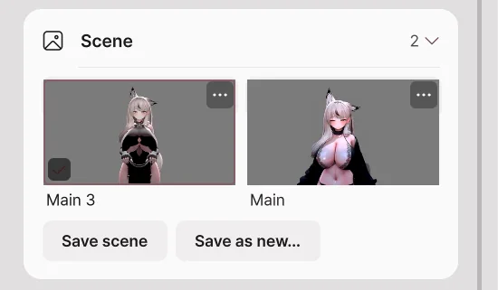
- Adjust the background, lighting, avatar, and camera to the desired state.
- Save it on the scene card.
- Next, selecting a thumbnail will load the composition of that scene.
A scene also remembers the avatar's position and pose, and opening it brings them back. Switching to another avatar inside a scene makes that avatar the scene's avatar. Going back to the avatar list with unsaved changes asks whether to save them.
| Item | What it does |
|---|---|
| New Scene | Create a new scene composition. |
| Save | Records the current batch and settings. |
| Thumbnail | Loads the saved scene. |
| Search | Find scenes by name. |
| ⋯ Menu | Opens commands for the scene, such as Rename or Duplicate. |
Avatar Placement
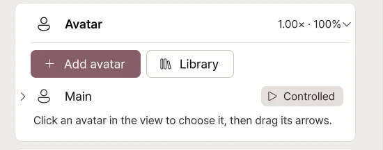
| Control | Things that change |
|---|---|
| Position X | Move left and right. |
| Position Y | Move up and down. |
| Position Z | Moves forward and backward. |
| Rotation | Changes the direction the avatar is facing. |
| Size | Makes the avatar in the scene bigger or smaller. |
| Brightness | Adjusts the brightness applied to the avatar. |
| Center | Returns the avatar to the default position. |
Multiple Avatars (Pro)
Add additional avatars to place more characters in the same scene. After selecting an avatar, changing the control target will switch which character receives your tracking input.
- Same Action: Multiple avatars move together with the same tracking input.
- Lip Sync All: Moves the mouths of multiple avatars together.
- Lip Sync Main: Only the main controlled avatar moves its mouth.
- Lip Sync Off: Does not use shared lip sync.
Camera (Pro)
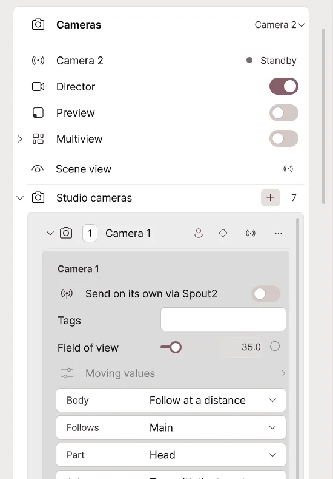
- Camera → Press + on Studio Camera to create a camera.
- Click the camera name to expand detailed settings.
- Adjust the target, position, gaze, and lens.
- Select the camera as the broadcast target.
Turn on Grab to see the camera in the scene view and move or turn it like a prop. Grab and Put on the current view are in the first line of each camera's settings and in the camera's ⋯ menu. To keep the current working composition, use Put on the current view.
Position Mode
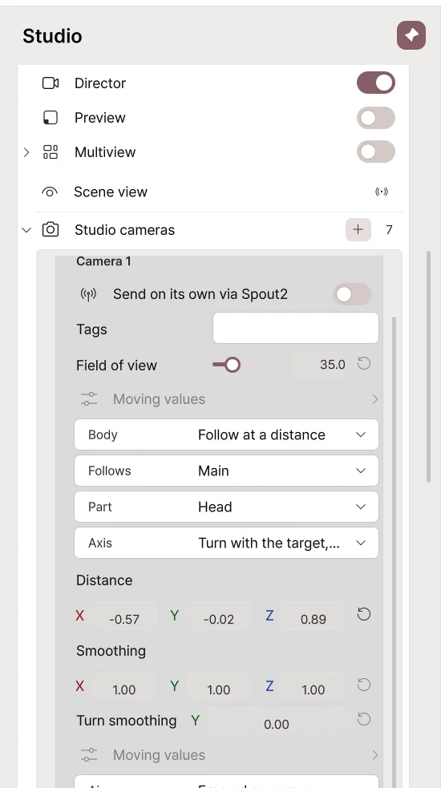
| Option | How the camera moves |
|---|---|
| Stay | Remains at the set position. Does not follow the avatar if it moves. |
| Follow Target | Attaches to the selected bone or point. If you choose the head, it may enter inside the head. |
| Following at a Distance | Follow while maintaining a position X, Y, Z away from the target. |
| Orbiting the Target | Move around the target at a set distance. Change the front/side composition by ring angle. |
- Target: Choose the reference points for the avatar to follow, such as head or body.
- Distance X, Y, Z: Determine how far the camera stays from the target horizontally, vertically, and front/back.
- Smoothness: Higher settings follow slowly and reduce shaking, lower settings respond immediately.
Rotation Reference
| Option | When the Avatar Turns |
|---|---|
| World Coordinates | The camera’s relative direction remains based on the scene. |
| Simple Follow | Move following behind the target. |
| Follow Target Rotation, Keep Up as World | Follow left-right rotation, but keep the top of the screen upright. |
| Rotate, No Roll | Follow left-right and up-down rotation, but do not follow head tilt. |
| Fixed to Target | The camera position rotates with the target’s full rotation, including head tilt. |
These settings determine the camera positioning. To keep the face on screen, also choose the gaze method below.
Gaze Method
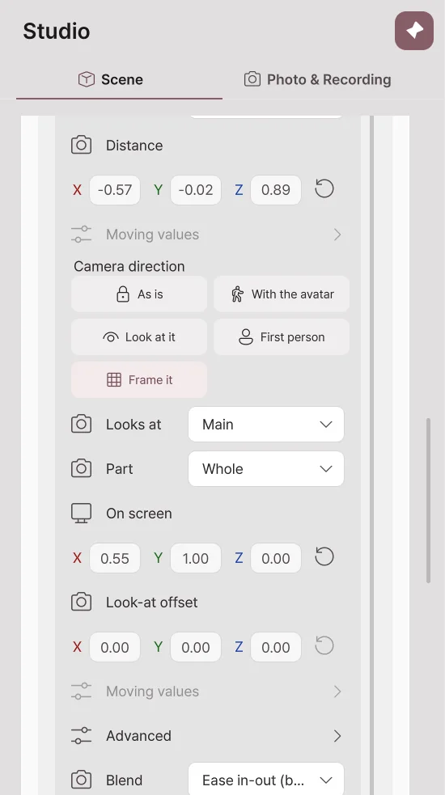
| Option | Where the Lens Looks |
|---|---|
| Fixed | Continuously look in the specified direction. |
| With target | Rotates together in the direction the target is looking back. |
| Focus on target | Continually looks at the selected face or point. |
| First-person | Views as the person’s perspective based on the starting angle. |
| Screen composition | Adjusts direction to place the target at a specific position on the screen. |
- Aim point: Moves the focus point on the target to X·Y·Z coordinates.
- Screen position: 0.5 for horizontal and vertical is the center. Changing the value places the avatar in a different position on the screen.
- Gaze smoothness: Increasing makes the lens direction change slowly, decreasing makes it follow immediately.
Lens and transition
| Item | Changing value does |
|---|---|
| Field of view | Lowering makes it zoom in like telephoto, raising makes it capture wide like wide-angle. |
| Orthographic size | Raising captures more widely and makes the avatar smaller. |
| Near clipping distance | Objects closer than this distance are not rendered. Raising may cut off faces or props. |
| Far clipping distance | Objects farther than this distance are not rendered. |
| Aspect ratio | Changes the screen shape, e.g., horizontal broadcast or vertical video. |
| Shake intensity | Increasing makes it feel like handheld shooting. 0 means no shake. |
| Shake speed | Increasing makes it shake faster. |
| Cut | Instantly switches to another camera. |
| Crossfade | The two camera screens overlap and change during the transition time. |
Director and Multiview
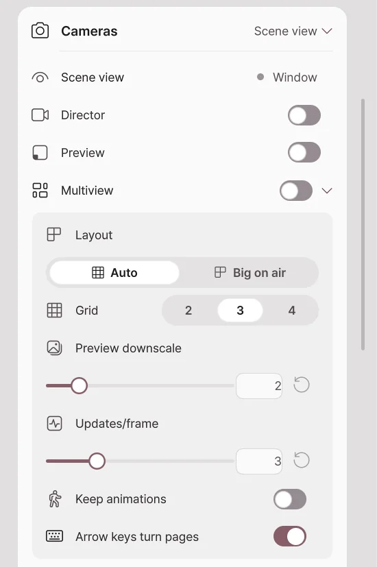
- Director Mode: Switch cameras to configure the broadcast screen.
- Multi-view: View previews from multiple cameras in one place. Turn it on with a separate switch.
- Grid: Increasing it allows you to see more cameras at once, and each cell becomes smaller.
- Downsampling: Increasing it reduces both preview quality and the load on the PC.
- Refresh rate: Lowering it makes previews less smooth and reduces the load on the PC.
- Automatic switching: Selects the next camera based on tags and weights. Cameras with a weight of 0 will not be automatically selected.
- Spout2 per camera: Sends the selected camera video to OBS under a separate name. You can output up to 3 additional streams.
Background
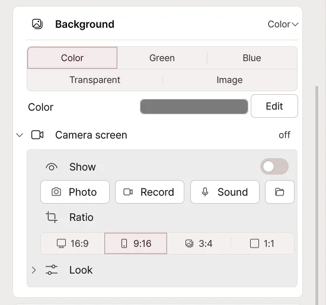
| Select | Visible Result |
|---|---|
| Solid Color | Fills the background with a uniform color. |
| Green | This is a background that can be removed with chroma key in OBS. Choose a color different from your outfit. |
| Transparent | Composites without a background in Spout2·NDI. The receiving side must also support alpha compositing. |
| Image | Use PNG·JPG pictures as the background. |
| Sky | Uses a sky scene as the background. |
Zooming in or out of the image changes the size of the picture, while moving it left/right or up/down changes its position. Turning on Fill crops and fills the edges while maintaining the ratio.
The camera screen decorations that look like a phone or camcorder have moved to the Studio → Photo & Recording tab. See Photos and Recording.
Lighting
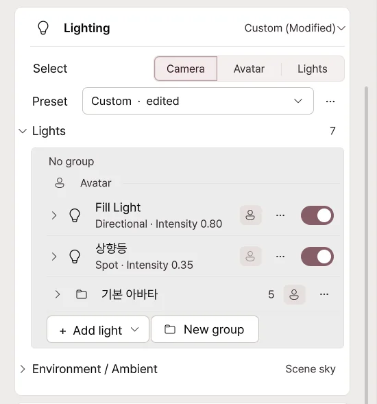
Choose the overall mood with a preset, and press individual lights for detailed adjustments. Preset lists are folded by kind, with your own saved presets at the top.
| Item | Effect when changed |
|---|---|
| Intensity | Increasing it makes it brighter. If too high, skin and hair may appear washed out. |
| Color | Changes the color of the light shining on the avatar. |
| Color Temperature | Lower gives a more orange tone, higher gives a bluer tone. |
| Range | Makes the light from point or spot lights reach farther. |
| Spot Angle | Narrower illuminates a specific area, wider covers the surroundings. |
| Shadow Strength | Higher makes the shadows darker. |
| Shadow Softness | Higher blurs the edges of the shadows. |
| Ambient Light | Brightens areas not directly hit by the lights. |
Position and Target
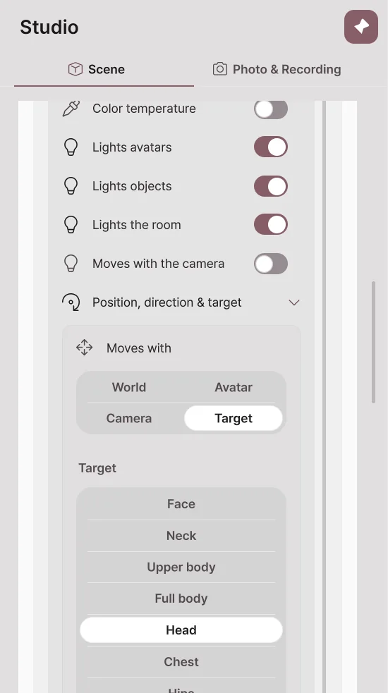
- Follow Position: The light follows the avatar or bones when they move.
- Look at Target: Turn the light toward the target.
- Smoothness: Increasing it makes the light less responsive to small shakes of the target.
- Light Group: Combine multiple lights to change position, rotation, and brightness together.
- Volumetric Spot (Pro): Creates a beam of light in the air. Increasing the density makes the light beam more intense.
Rooms and Props
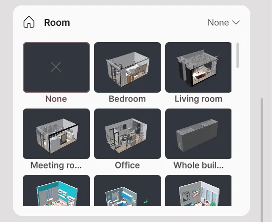
Choose a room preset to place the background space. Adjust the position, rotation, and scale to fit the stage and avatar. For extra rooms bought on BOOTH, see DLC room packs.
The low-poly interior pack no longer offers the whole building as a choice; its 28 separate rooms can be used as they are. An older scene saved with the whole building chosen opens without a room.
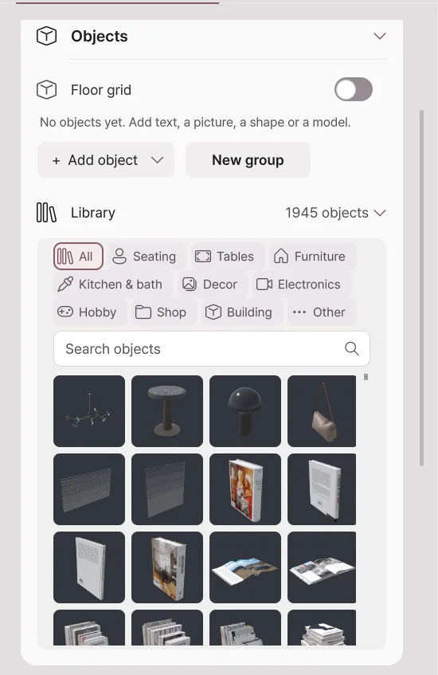
- Add Object: Place text, images, shapes, and 3D props.
- World Fixed: Objects stay in place even if the avatar moves.
- Attach to Avatar/Bone: Moves along with the body, hands, or head.
- Offset: Slightly move or rotate from the attachment point. Used to adjust the position of items held in hand.
- Avatar-Owned: Follows the avatar even when moving to another scene.
- Studio-Owned: Remains in the current scene.
The usage rights for props and avatars follow the original creator’s terms respectively. For more details, see Avatars and Props.